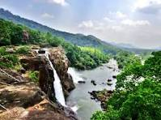
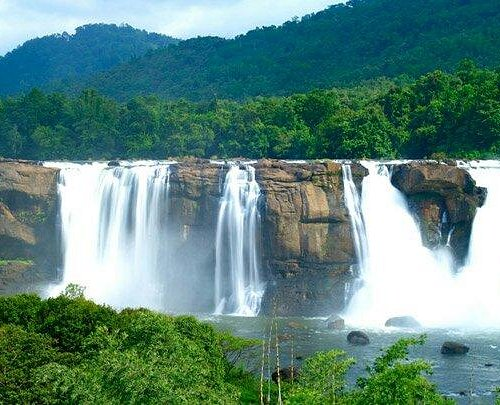

Waterfalls of Kerala
Kerala’s waterfalls are a breathtaking example of nature’s beauty. Surrounded by forests and mountains, these waterfalls attract travelers, nature lovers, and photographers year-round.

Athirappilly Waterfalls is the largest waterfall in Kerala and is often called the “Niagara of India.” Its majestic flow and surrounding greenery make it a must-visit destination.

Other beautiful waterfalls include Meenmutty, known for its three-tier structure, and Palaruvi, famous for its medicinal waters. These waterfalls offer scenic beauty and peaceful surroundings.